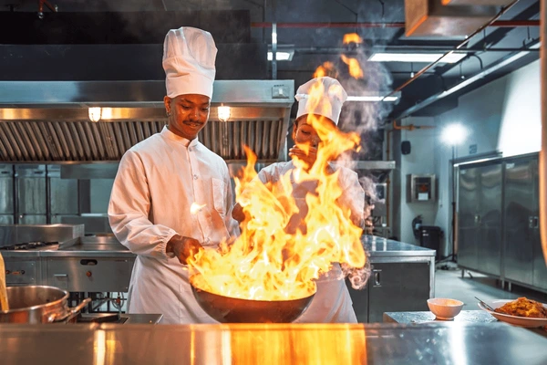

At Chi & Oma, we share more than Nigerian food, we share the feeling of home. Every dish is crafted with authentic ingredients, deep heritage, and a refined touch, bringing the soulful warmth of Naija to Portsmouth.
From our rich jollof to expertly seasoned suya and comforting soups, each plate reflects the traditions we grew up with and the memories that inspire us. We honour our roots while elevating every flavour with care, quality, and elegance.
Our mission is to bring the spirit, heart, and premium taste of Nigerian cuisine to everyone who walks through our doors. You’re not just dining, you’re experiencing home, thoughtfully reimagined.
Chi & Oma was born from a simple belief, that food is the most powerful way to share culture. Founded in 2023 by childhood friends Chidera and Oma, our restaurant brings the warmth of a Nigerian family kitchen to the heart of the city. Every dish on our menu is rooted in tradition, crafted with ingredients sourced from trusted local and West African suppliers.
From the smoky depth of our jollof rice to the fiery kick of our pepper soup, each plate tells a story. We cook with the same love and intention that our grandmothers did - no shortcuts, no compromises. Whether you are joining us for a quiet dinner or a celebration with loved ones, you will always leave with a full stomach and a warm heart.
Every recipe is rooted in Nigerian tradition, passed down through generations and cooked with genuine care.
We source the finest local and West African produce to ensure every dish is vibrant, seasonal and full of life.
Our kitchen runs on passion. Every plate that leaves it is a reflection of who we are and where we come from.
Chi & Oma is more than a restaurant — it is a gathering place for family, friends and the wider community.
The Founders
Chidera grew up in Lagos, where Sundays meant watching her mother cook enough food to feed the whole neighbourhood. In Enugu, Oma spent her childhood in her grandmother’s kitchen, a place filled with warmth, stories and the smell of fresh, home‑cooked meals.
Years later, when the two friends reconnected in London, they realised they shared the same dream: to bring that feeling of comfort, familiarity and genuine hospitality to others.
They spent two years refining recipes, finding the right suppliers and building a team that believes in the same values of honesty, flavour and community. In 2023, Chi & Oma opened its doors, and it has remained a lively, welcoming space ever since.
